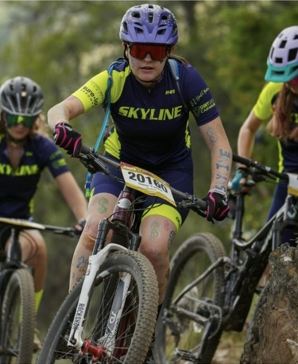

My favorite sport is mountain biking. My entire family mountain bikes, and my sister and I are both on the Skyline mountain bike team. Until last year, however, I actually hated it. I was the only one in my family who didn't enjoy biking. That changed last year, and now I absolutely love it.
Timeline
I've been mountain biking my whole life, so there isn't a specific date that I remember riding for the first time. I'll use my time on the Skyline team instead.
- 2022-I joined the Skyline mountain biking team for the first time and raced in JR Devo. I still didn't like it at this point, but I somewhat enjoyed the races.
- 2023-Biking still wasn't my favorite, so I decided to quit the team that year.
- 2024-My family convinced me to join again for my freshman year of high school, so I did, and ended up really enjoying it and finding out I was pretty good at it too.
- 2025-I'm planning on doing the team again this year, along with the rest of my years in high school.
My Mentor
My whole family mountain bikes, but my dad specifically has been the most enthusiastic about it with me. He is very supportive at races and has taught me everything about biking as a whole.
Acomplishments
In the 2022 season, I placed 13th, 10th, and 8th respectively in the three races that I participated in. In the 2024 season, I won 10th, 8th, and 7th in the three first races (all in order), and 2nd in regionals.